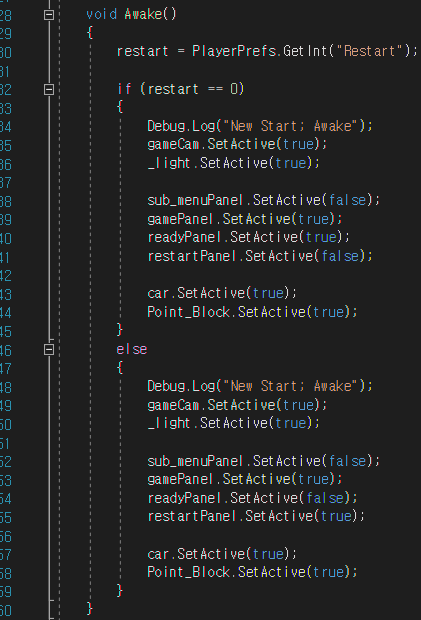

(1) 알고리즘 설계
-기본 알고리즘


(2) 3D 자동차 모델 설정 및 물리엔진 구축
-3D 자동차 모델
(1)초기 3D 자동차 모델

▼
(2)최종 3D 자동차 모델
-물리엔진 구축
(1)자동차 움직임 코드-1(CarController)

(1)자동차 움직임 코드-2(InputManager)
(1)자동차 움직임 코드-3(AntirollBar)
자동차 움직임 코드를 적용한 차의 움직임
(3)가속 발판을 밟았을 때의 코드(speedboard)
가속 발판을 밟았을 때의 차의 움직임
(4)점프 패드를 밟았을 때의 코드(jumppad)
점프 패드를 밟았을 때의 차의 움직임
(3) 맵 설계
1. 초기 단계

▼
▼
▼
2.중간 단계 모습
▼
▼
▼
3. 최종 모습
(4) UI 제작
-게임 시작 초기 모습
▼
-게임 시작 최종 모습

최종 게임 메뉴 UI
(5)재시작 버튼('R')을 눌렀을 때의 코드(restart)

'R'키를 눌렀을 때의 게임 영상
(6)타이머 실행 코드(timer)